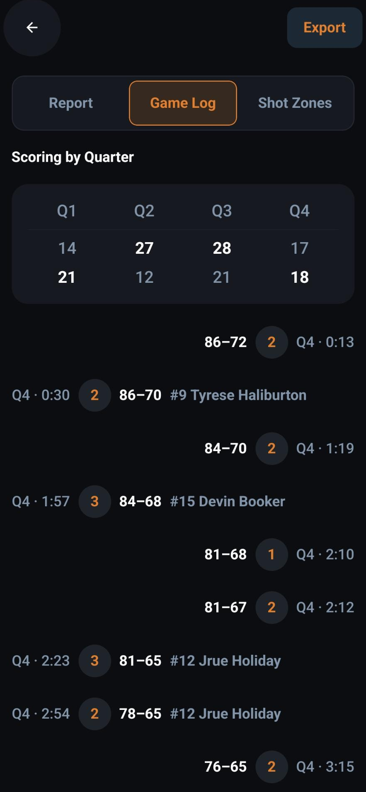
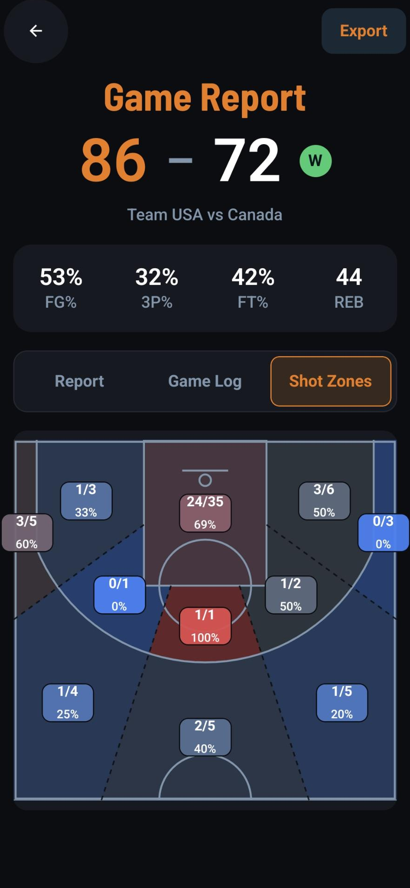

Advanced metrics
PIR, EFF and true plus-minus computed for every player, every game — the numbers scouts actually read.
Courtside stats for the solo coach
HoopTrax turns one coach and one phone into a full stats crew — live tracking, shot-chart heatmaps and pro-grade box scores, all without ever leaving the bench.

Built for the coach who does it all. No stats crew, no laptop, no Wi-Fi required — just you, your bench, and the numbers that win games.
Live tracking
A single tap logs points, rebounds, assists, steals, fouls and more — for whoever's on the floor. Substitutions, the game clock and minutes-played all keep themselves. You watch the game; HoopTrax keeps the book.
Shot zones
Tap where each shot went up and HoopTrax builds a live heatmap — eleven court zones, made, attempted and FG% on every one. Spot the hot hand, the cold corner, and the shot selection to fix at halftime.

And there's more
PIR, EFF and true plus-minus computed for every player, every game — the numbers scouts actually read.
Full box scores, season averages and quarter breakdowns. Share a polished PDF or Excel in two taps.
Every tap saves on-device instantly and syncs to the cloud when you're back on Wi-Fi. Dead gym? No problem.
How it works
Add your roster once — names, numbers, positions. Reuse it all season long.
Pick your starting five, tip off, and tap the action as it happens on the floor.
The final buzzer hands you box scores, shot charts and shareable reports.
Good to know
It's in the final stretch of development. This page is exactly where the App Store and Google Play links will land the moment it's live — check back soon.
iPhone and Android phones and tablets. It's built to work one-handed courtside and adapts cleanly to portrait or landscape.
No. HoopTrax is offline-first: everything saves to your device instantly and syncs to the cloud later, so dead gym Wi-Fi never costs you a stat.
HoopTrax will launch free and ad-supported, with an optional ad-free upgrade down the line. Final pricing lands at launch.
Not at all — keep as many saved teams and rosters as you like, each with its own game history and season averages.
HoopTrax is almost ready for tip-off. The download buttons go live right here on launch day.